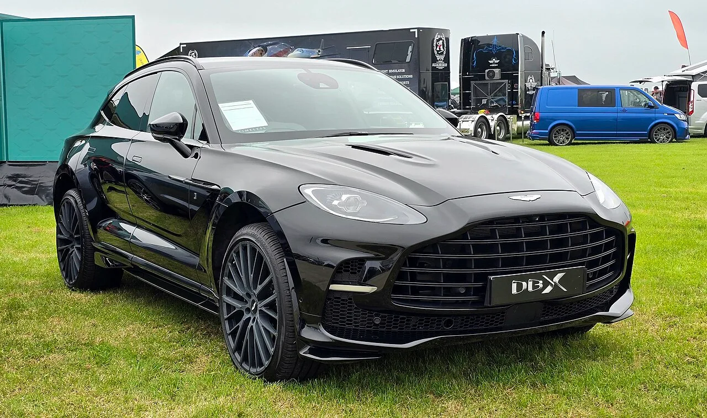
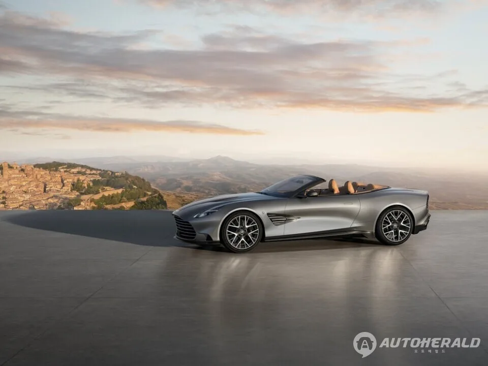
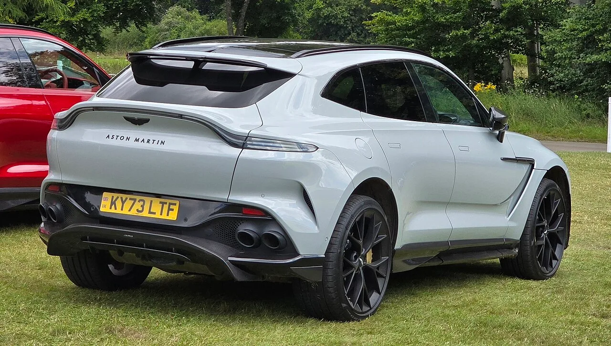

▲ DB12 S는 700마력·800Nm에 카본 세라믹 브레이크를 기본으로 얹었다 ⓒ Aston Martin
고성능 버전이라고 하면 보통 출력 숫자부터 봅니다.
애스턴마틴은 이번에 다른 말을 먼저 꺼냈습니다.
"S는 단순히 출력을 높였다는 뜻이 아니다"라는 것입니다. 8월 24일 국내에 처음 선보인 세 대를 뜯어보면 그 말의 의미가 보입니다.
1. 세 대를 한 표로
| 모델 | 성격 | 출력 | 토크 |
|---|---|---|---|
| DBX S | 퍼포먼스 SUV | 727마력 | 900Nm |
| DB12 S | 그랜드 투어러 | 700마력 | 800Nm |
| 밴티지 S | 스포츠카 | 680마력 | 800Nm |
세 대 모두 같은 엔진을 씁니다. 4.0리터 V8 트윈터보입니다. 그런데 출력은 각각 다릅니다.
가장 높은 것이 SUV인 DBX S라는 점이 눈에 띕니다. 727마력에 900Nm입니다. 무거운 차체를 밀어야 하기 때문이기도 하고, 이 세그먼트의 경쟁이 그만큼 치열하기 때문이기도 합니다.
2. DBX S — 47kg을 덜어낸 방법

▲ DBX S는 727마력·900Nm으로 라인업 최고 출력을 낸다 (사진은 DBX 707) ⓒ Wikimedia Commons (CC0)
| 항목 | 내용 |
|---|---|
| 루프 | 카본 파이버 |
| 휠 | 23인치 마그네슘 |
| 감량 폭 | 최대 47kg |
📍 어디서 덜어냈느냐가 중요합니다
카본 루프는 차량에서 가장 높은 위치의 무게를 줄입니다. 무게중심이 내려가면 코너에서 롤이 줄어듭니다. 마그네슘 휠은 회전하는 부분의 무게를 줄입니다. 같은 1kg이라도 바퀴에서 줄인 1kg이 가속과 제동에 미치는 영향이 훨씬 큽니다.
단순히 47kg 가벼워졌다는 말과는 다릅니다. 어느 부위의 47kg인지가 실제 주행 감각을 가릅니다.
3. 밴티지 S — 최고속도에서 44kg이 눌러준다
| 항목 | 수치 |
|---|---|
| 출력 / 토크 | 680마력 / 800Nm |
| 0-100km/h | 3.4초 |
| 최고속도 | 325km/h |
| 리어 윙 다운포스 | 최고속도에서 44kg 추가 |
마지막 줄이 이 차의 성격을 보여줍니다. 리어 윙이 최고속도에서 44kg만큼 뒤를 눌러줍니다.
속도가 높아질수록 차는 뜨려고 합니다. 뒤가 뜨면 그립이 사라집니다. 다운포스는 그 반대 방향으로 힘을 만들어 접지력을 유지시킵니다.

▲ 밴티지 S는 0-100km/h 3.4초, 최고속도 325km/h를 낸다 ⓒ Wikimedia Commons
4. DB12 S — 브레이크로 27kg
DB12 S에서 가장 눈여겨볼 항목은 브레이크입니다. 카본 세라믹 브레이크가 기본으로 들어갑니다.
이로써 스프렁 하중이 27kg 줄어듭니다.
📍 카본 세라믹이 비싼 이유
일반 주철 디스크보다 훨씬 가볍고, 고온에서도 제동력이 덜 떨어집니다. 문제는 가격입니다. 옵션으로 고르면 수천만 원대가 붙는 경우가 흔합니다. 이것을 기본 적용했다는 것은 S의 성격을 트랙 쪽으로 명확히 잡았다는 신호입니다.

▲ DB12 S는 그랜드 투어러이면서도 카본 세라믹 브레이크를 기본으로 얹었다 ⓒ Aston Martin
5. "S는 출력이 아니다"라는 말의 뜻
애스턴마틴은 "S는 단순히 출력을 높인 것이 아니라, 응답성 향상과 정교한 섀시 제어를 통해 각 모델의 고유한 성격을 강조한 것"이라고 설명했습니다.
| 영역 | 구체적 변경 |
|---|---|
| 파워트레인 | 출력·응답성 개선 |
| 서스펜션 | 전용 튜닝 |
| 공력 | 리어 윙 등 다운포스 확보 |
| 경량화 | 카본·마그네슘 적용 |
네 항목이 모두 들어갔다는 점이 핵심입니다. 출력만 올린 모델은 직선에서만 빨라집니다. 무게와 섀시, 공력을 함께 손대면 코너와 제동에서 달라집니다.

▲ SUV에까지 같은 공식을 적용한 것이 S 라인업의 특징이다 ⓒ Wikimedia Commons (CC0)
6. 남은 변수 — 가격
📍 국내 가격은 이번 발표에 없습니다
이번 공개 자리에서 국내 판매가격은 발표되지 않았습니다. 애스턴마틴은 개별 사양 구성 폭이 큰 브랜드이므로, 실제 견적은 공식 채널을 통해 확인해야 합니다.
공식 사양 구성은 애스턴마틴 코리아에서 확인할 수 있습니다. 애스턴마틴 공식 사이트 바로가기
7. 정리
애스턴마틴이 8월 24일 DBX S·밴티지 S·DB12 S 세 모델을 국내에 처음 공개했습니다. 세 대 모두 4.0리터 V8 트윈터보를 씁니다.
DBX S는 727마력·900Nm에 카본 루프와 23인치 마그네슘 휠로 최대 47kg을 덜어냈습니다. 밴티지 S는 680마력·3.4초·325km/h에 최고속도에서 44kg의 다운포스를 만듭니다. DB12 S는 700마력에 카본 세라믹 브레이크를 기본으로 얹어 27kg을 줄였습니다.
공통점은 출력만 손대지 않았다는 것입니다. 서스펜션 튜닝, 공력, 경량화가 함께 들어갔습니다. 국내 가격은 아직 공개되지 않았습니다.